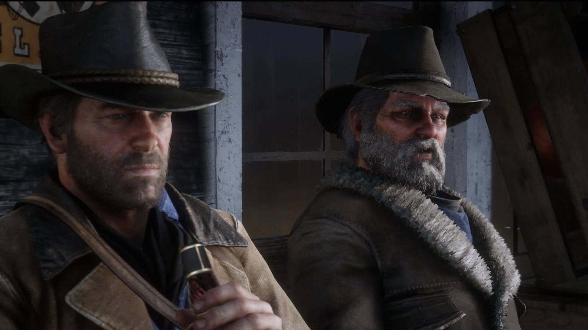
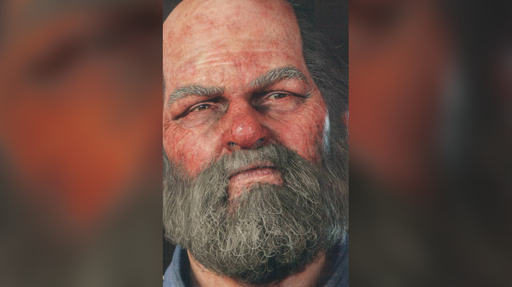
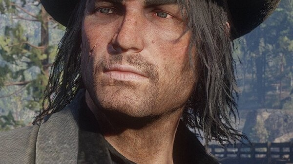
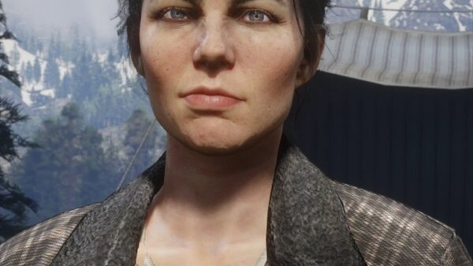
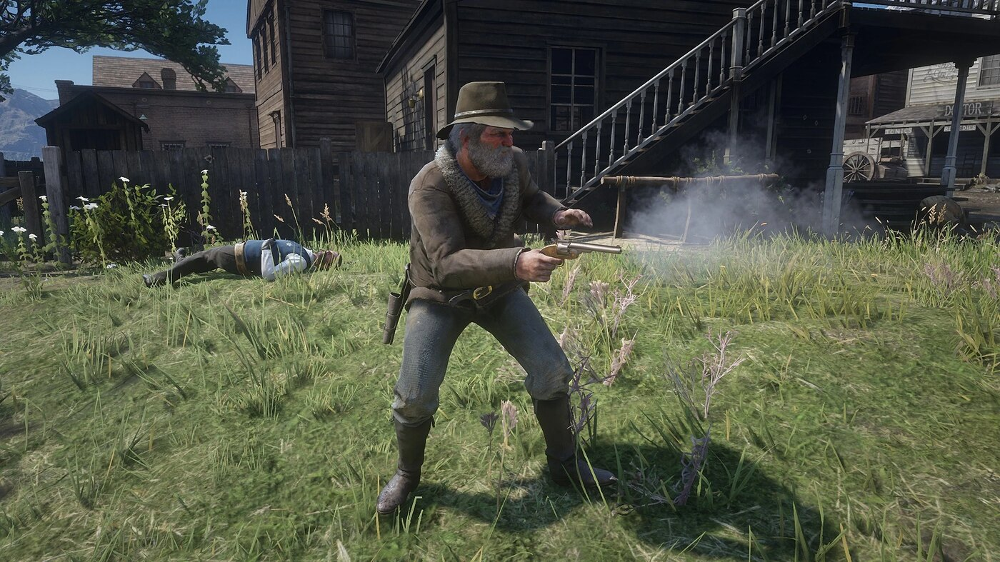

Character · Van der Linde gang
Uncle
Uncle is one of the oldest members of the Van der Linde gang. His real name is never given. Rockstar describes him as "always around when the whiskey is open and never around when there's any work to be done".
He appears in Red Dead Redemption 2 and in Red Dead Redemption, where he dies defending the Marston ranch in 1911.
- Real name
- Never given
- Died
- 1911, Beecher's Hope
- Status
- Deceased
- Affiliation
- Van der Linde gang, Marston ranch
- Voiced by
- Spider Madison (RDR1); John O'Creagh and James McBride (RDR2)
- Games
- Red Dead Redemption, Red Dead Redemption 2
Biography
In the gang
According to the official guide, Uncle is a heavy drinker who claims to have had several wives, travelled widely, and been a gifted gunslinger in his youth. He blames his reluctance to work on "terminal lumbago". He introduced Abigail to the gang around 1894.
In chapter 2, he takes part in the outing to Valentine with Arthur, Karen, Mary-Beth and Tilly. In chapter 3, in "An Honest Mistake", his tip about an unguarded Cornwall coach leads Arthur, Bill, Charles and Uncle into a fight with Cornwall's men, which they escape from a barn.
At Beaver Hollow, he brings a drunk Molly O'Shea back from Saint Denis, on the night she is killed. He leaves the gang shortly afterwards; Dutch announces that he, Pearson and Mary-Beth have run away.
Beecher's Hope (1907)
In the epilogue, Uncle meets John Marston in Blackwater as John buys the land at Beecher's Hope, and insists on helping. He tells John that Charles is in Saint Denis, and the three build the ranch, Uncle mostly giving orders. After a celebration, the Skinner Brothers kidnap him and burn his back; John and Charles rescue him. He stays on the ranch with the Marstons.
Death (1911)
In Red Dead Redemption, Uncle looks after the ranch, badly, while John is away hunting his former gang. In the third act, in "The Last Enemy That Shall Be Destroyed", soldiers and agents led by Edgar Ross attack Beecher's Hope. Uncle helps defend the ranch and is shot dead.
Relationships

John Marston
Builds Beecher's Hope with him, and loses him in 1911.

Charles Smith
Helps build the ranch and rescues him from the Skinner Brothers.

Abigail Marston
Brought into the gang by Uncle around 1894.

Molly O'Shea
Brought back drunk by him on the night she dies.

Arthur Morgan
Rides with him to Valentine and on the Cornwall coach job.
Development and performance
In Red Dead Redemption (2010), Uncle is played by Spider Madison. For Red Dead Redemption 2, the role first went to John O'Creagh, who died during production; James McBride took over, while O'Creagh's singing lines were kept in the game. A lake in Ambarino, O'Creagh's Run, is named after him.
Gallery
